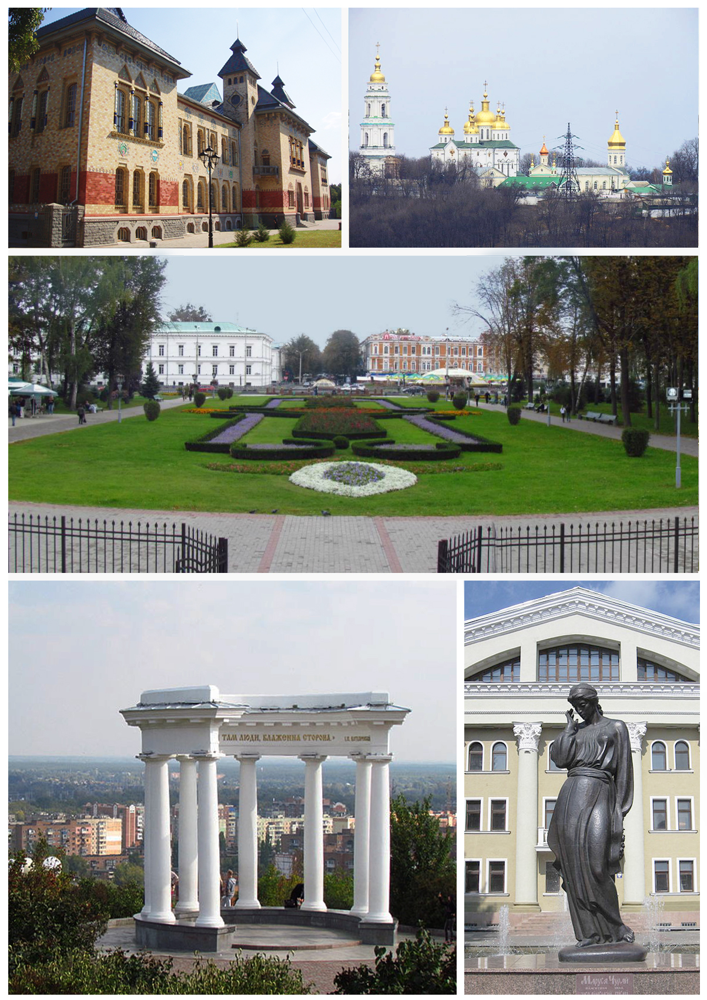
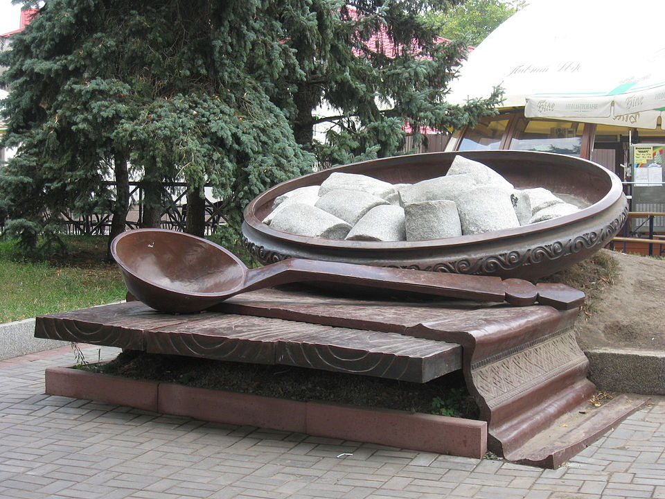

Затишне місто Полтава
Це прекрасне місто під назвою Полтава недарма розташувалося в центрі України. Воно зовсім не схоже на своїх сусідів-мільйонників за швидкістю і ритму життя, і в Полтаві життя тече дійсно розмірено і душевно. Полтава – це, коли шлях з будь-якої точки міста до центру займає лічені хвилини. Так що вже гріха таїти – на відміну від тих самих мегаполісів, в Полтаві у вас завжди є вибір: або проїхатись, або пройтися пішки.

Памьятники и Письменники
Це місто, якому Микола Гоголь не втомлювався співати дифірамби, залишаючи частинку своїх вражень в багатьох творах. Це і місто, яке є батьківщиною Івана Петровича Котляревського. Поряд з пам’ятниками вічним класикам, в місті з недавніх пір красується пам’ятний знак Полтавській галушці (єдиний у всьому світі, між іншим), ложку з якого вподобали для своїх фотографій всі туристи.

До речі, про галушки. Щороку полтавці відзначають свято, присвячене цій місцевій страві, на якому представлені галушки на будь-який смак.Але все ж, однією з головних перлин цього, потопаючого в зелені міста є Біла альтанка – напівкругла колонада з вісьмома колонами доричного ордера. Саме з цього місця відкривається прекрасний вид на місто, особливо ввечері, коли Полтава всіяна безліччю вогнів. Тут насолоджуються зоряним небом закохані пари, а звучить саксофон і ніжне підсвічування ротонди надає цьому місцю якийсь чарівний шарм. Іншою визначною пам’яткою є Краєзнавчий музей цього міста. Пам’ятка архітектури виконана в стилі модерн, у вікнах якої можна розгледіти пентаграми, а якщо переступити її поріг – то і зовсім зануритися в багату історію цього краю.
Музеї
У Полтаві велике число музеїв — як державних, муніципальних, так і створених на громадських засадах (переважно при підприємствах і внз):

Парки-пам'ятки садово-паркового мистецтва
- Полтавський міський парк
- Корпусний сад
- Парк аграрного технікуму
- Ботанічний сад Полтавського національного педагогічного університету імені В. Г. Короленка
- Парк ім. Котляревського
- Парк на садибі Панаса Мирного
Полтавці
В цілому, жителі Полтави – дуже добрі і привітні люди, які завжди раді знайомству і дружбі, навіть якщо ти не “місцевий”. А їх говір відомий далеко за межами області. Вони і не особливо переживають, коли в їхній мові звучать українські слова в перемішку з російськими, або навпаки. Це так званий “полтавський суржик”, якого місцеві жителі зовсім не соромляться.